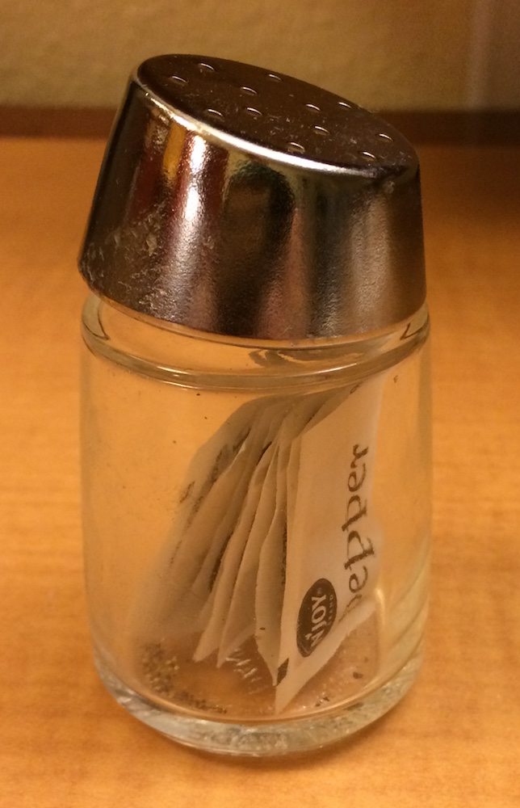
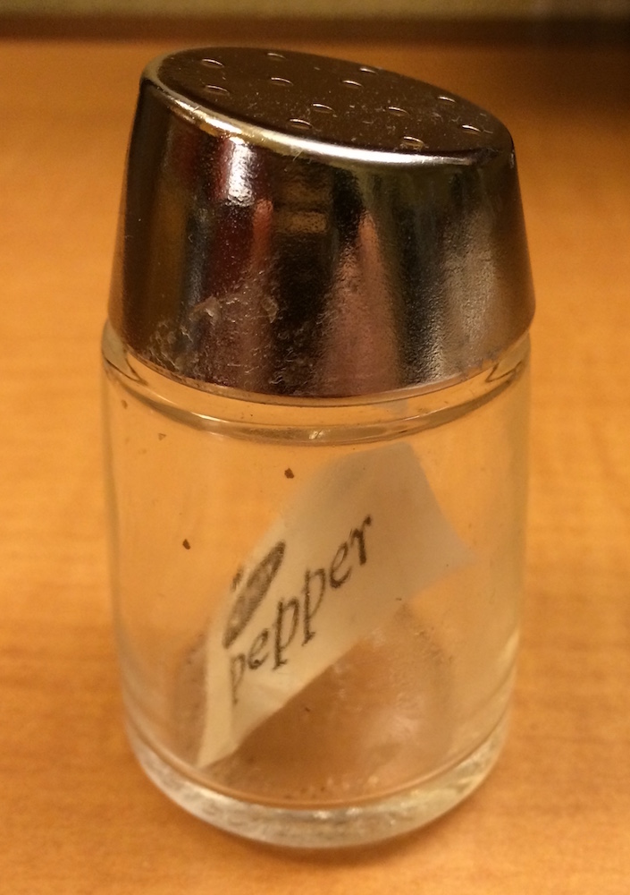
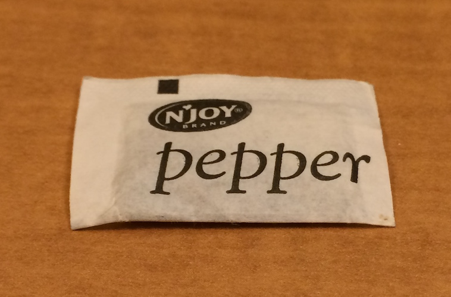
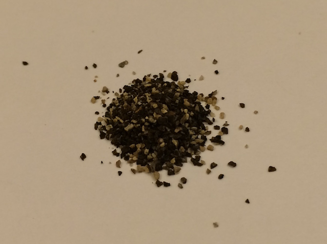

# A tibble: 53,940 × 10
carat cut color clarity depth table price x y z
<dbl> <ord> <ord> <ord> <dbl> <dbl> <int> <dbl> <dbl> <dbl>
1 0.2 Ideal E SI2 61.5 55 326 4 4 2.4
2 0.2 Premium E SI1 59.8 61 326 3.9 3.8 2.3
3 0.2 Good E VS1 56.9 65 327 4 4.1 2.3
4 0.3 Premium I VS2 62.4 58 334 4.2 4.2 2.6
5 0.3 Good J SI2 63.3 58 335 4.3 4.3 2.8
6 0.2 Very Good J VVS2 62.8 57 336 3.9 4 2.5
7 0.2 Very Good I VVS1 62.3 57 336 4 4 2.5
8 0.3 Very Good H SI1 61.9 55 337 4.1 4.1 2.5
9 0.2 Fair E VS2 65.1 61 337 3.9 3.8 2.5
10 0.2 Very Good H VS1 59.4 61 338 4 4 2.4
# ℹ 53,930 more rows
dplyr provides the across() function for performing these repeated function calls:
# Option 1: Create our own named functionround_to_one <-function(x) {round(x, digits =1)}diamonds %>%mutate(across(.cols =c(carat, x, y, z), .fns = round_to_one ) )
# A tibble: 53,940 × 10
carat cut color clarity depth table price x y z
<dbl> <ord> <ord> <ord> <dbl> <dbl> <int> <dbl> <dbl> <dbl>
1 0.2 Ideal E SI2 61.5 55 326 4 4 2.4
2 0.2 Premium E SI1 59.8 61 326 3.9 3.8 2.3
3 0.2 Good E VS1 56.9 65 327 4 4.1 2.3
4 0.3 Premium I VS2 62.4 58 334 4.2 4.2 2.6
5 0.3 Good J SI2 63.3 58 335 4.3 4.3 2.8
6 0.2 Very Good J VVS2 62.8 57 336 3.9 4 2.5
7 0.2 Very Good I VVS1 62.3 57 336 4 4 2.5
8 0.3 Very Good H SI1 61.9 55 337 4.1 4.1 2.5
9 0.2 Fair E VS2 65.1 61 337 3.9 3.8 2.5
10 0.2 Very Good H VS1 59.4 61 338 4 4 2.4
# ℹ 53,930 more rows
# Option 2: Use an "anonymous" or "lambda" function that isn't nameddiamonds %>%mutate(across(.cols =c(carat, x, y, z), .fns =function(x) {round(x, digits =1)} ) )
# A tibble: 53,940 × 10
carat cut color clarity depth table price x y z
<dbl> <ord> <ord> <ord> <dbl> <dbl> <int> <dbl> <dbl> <dbl>
1 0.2 Ideal E SI2 61.5 55 326 4 4 2.4
2 0.2 Premium E SI1 59.8 61 326 3.9 3.8 2.3
3 0.2 Good E VS1 56.9 65 327 4 4.1 2.3
4 0.3 Premium I VS2 62.4 58 334 4.2 4.2 2.6
5 0.3 Good J SI2 63.3 58 335 4.3 4.3 2.8
6 0.2 Very Good J VVS2 62.8 57 336 3.9 4 2.5
7 0.2 Very Good I VVS1 62.3 57 336 4 4 2.5
8 0.3 Very Good H SI1 61.9 55 337 4.1 4.1 2.5
9 0.2 Fair E VS2 65.1 61 337 3.9 3.8 2.5
10 0.2 Very Good H VS1 59.4 61 338 4 4 2.4
# ℹ 53,930 more rows
When we look at the documentation for across(), we see that the .cols argument specifies which variables we want to transform, and it has a <tidy-select> tag. This means that the syntax we use for .cols follows the rules we learned about last week!
Learn More
If you are interested in seeing more examples of the across() function, navigate back to the across() documentation and read through the Examples section at the bottom. Click the “Run examples” link to view the output for all the examples.
✅: Check-in 8.1: Connecting across() with
pivot_wider() and pivot_longer()
Fill in the code below to convert all numeric columns in the diamonds dataset into character columns.
Fill in the code below that accomplishes #2 using a pivot_longer() followed by a pivot_wider().
diamonds %>%# Add a unique identifier for each row# Needed because there is an x, y, z for each combination of carat, cut, color, claritymutate(row_id =row_number()) %>%pivot_longer(cols = ____, names_to ="dimension",values_to ="value") %>%mutate(____ =str_c(____, "mm", sep =" ") ) %>%pivot_wider(____ ="dimension", values_from ="value") %>%select(-row_id)
Grouping diamonds by cut, clarity, and color then counting the number of observations and computing the mean of each numeric column.
What happens if you use a list of functions in across(), but don’t name them? How is the output named?
1.1 Performing Multiple Operations
What if we wanted to perform multiple transformations on each of many variables?
Within the different values of diamond cut, let’s summarize the mean, median, and standard deviation of the numeric variables. When we look at the .fns argument in the across() documentation, we see that we can provide a list of functions:
What does the list of functions look like? What is the structure of this list object?
list_of_fcts <-list(mean = mean, med = median, sd = sd)list_of_fcts
$mean
function (x, ...)
UseMethod("mean")
<<<<<<< HEAD
<bytecode: 0x000001e2f4429e38>
=======
<bytecode: 0x000002900ef4f3f8>
>>>>>>> 57569305c70b49da634cb8c7900445917e16f470
<environment: namespace:base>
$med
function (x, na.rm = FALSE, ...)
UseMethod("median")
<<<<<<< HEAD
<bytecode: 0x000001e2f34ba1c8>
=======
<bytecode: 0x000002900e0731c8>
>>>>>>> 57569305c70b49da634cb8c7900445917e16f470
<environment: namespace:stats>
$sd
function (x, na.rm = FALSE)
sqrt(var(if (is.vector(x) || is.factor(x)) x else as.double(x),
na.rm = na.rm))
<<<<<<< HEAD
<bytecode: 0x000001e301087348>
=======
<bytecode: 0x000002901133d5e8>
>>>>>>> 57569305c70b49da634cb8c7900445917e16f470
<environment: namespace:stats>
str(list_of_fcts)
List of 3
$ mean:function (x, ...)
$ med :function (x, na.rm = FALSE, ...)
$ sd :function (x, na.rm = FALSE)
Let’s explore lists a bit more…
Review of Lists
A list is a 1-dimensional data structure that has no restrictions on what type of content is stored within it. A list is a “vector”, but it is not an atomic vector - that is, it does not necessarily contain things that are all the same type.
List components may have names (or not), be homogeneous (or not), have the same length (or not).
Indexing
Indexing necessarily differs between R and Python, and since the list types are also somewhat different (e.g. lists cannot be named in python), we will treat list indexing in the two languages separately.

An unusual pepper shaker which we’ll call pepper

When a list is indexed with single brackets, pepper[1], the return value is always a list containing the selected element(s).

When a list is indexed with double brackets, pepper[[1]], the return value is the selected element.

To actually access the pepper, we have to use double indexing and index both the list object and the sub-object, as in pepper[[1]][[1]].
Figure 1: The types of indexing are made most memorable with a fantastic visual example from Grolemund and Wickham (2017), which I have repeated here.
There are 3 ways to index a list:
With single square brackets, just like we index atomic vectors. In this case, the return value is always a list.
With double square brackets. In this case, the return value is the thing inside the specified position in the list, but you also can only get one entry in the main list at a time. You can also get things by name.
mylist[[1]]
[1] TRUE TRUE FALSE FALSE TRUE
mylist[["third_thing"]]
[1] "a" "b"
Using x$name. This is equivalent to using x[["name"]]. Note that this does not work on unnamed entries in the list.
mylist$third_thing
[1] "a" "b"
To access the contents of a list object, we have to use double-indexing:
mylist[["third_thing"]][[1]]
[1] "a"
2 Vectorized Functions
The functions we’ve used thus far (round_to_one(), mean(), median(), sd()) all have a specific quality—they are vectorized. Meaning, by default, these functions operate on vectors of values rather than a single value. This is a feature that applies to atomic vectors (and we don’t even think about it):
Notice how the abs() function found the absolute value of each element of x without having to loop over each element? In programming languages which don’t have implicit support for vectorized computations, this above process might instead look like:
x <-seq(from =-4, to =12, by =0.5)for(i in1:length(x)){ x[i] <-abs(x[i])}x
For atomic vectors, this process of applying a function to each element is easy to do this by default; with a list, however, we need to be a bit more explicit (because everything that’s passed into the function may not be the same type).
2.1 Is every function vectorized?
Short answer, no. There exist occasions where you either can’t or choose not to write a function that is vectorized. For example, if the function you’ve written makes use of if() statements, your function cannot operate on vectors. For example, take the pos_neg_zero() function below:
pos_neg_zero <-function(x){stopifnot(is.numeric(x))if(x >0){return("Greater than 0!") } elseif (x <0){return("Less than 0!") } else {return("Equal to 0!") }}
When I call the pos_neg_zero() function on a vector I receive an error:
x <-seq(from =-4, to =4, by =1)pos_neg_zero(x)
Error in `if (x > 0) ...`:
! the condition has length > 1
This error means that the if(x > 0) condition can only be checked for something of length 1. So, to use this function on the vector x, you would need to apply the function individually to each element:
result <-rep(NA, length(x) )for(i in1:length(x)){ result[i] <-pos_neg_zero(x[i])}result
[1] "Less than 0!" "Less than 0!" "Less than 0!" "Less than 0!"
[5] "Equal to 0!" "Greater than 0!" "Greater than 0!" "Greater than 0!"
[9] "Greater than 0!"
Vector initialization
Note that I initialized a result vector to store the results of calling the pos_neg_zero() function for the vector x. Similar to C++ and Java, R is an assembly language that requires objects be created before they are used, which is why I couldn’t initialize result inside the for()-loop. Second, when I initialized the result vector I made it the size I wanted, rather than iteratively making it larger and larger (which makes operations incredibly slow).
Yes, I could have written a “better” function which used a vectorized function (e.g., case-when()) instead of a non-vectorized function (e.g., if()).
pos_neg_zero <-function(x){stopifnot(is.numeric(x)) state <-case_when(x >0~"Greater than 0!", x <0~"Less than 0!", .default ="Equal to 0!")return(state)}
When I call this function on the vector x, I no longer receive an error:
pos_neg_zero(x)
[1] "Less than 0!" "Less than 0!" "Less than 0!" "Less than 0!"
[5] "Equal to 0!" "Greater than 0!" "Greater than 0!" "Greater than 0!"
[9] "Greater than 0!"
That’s because the case_when() is vectorized!
2.2 When can’t you vectorize your function?
It is not always the case that we can write a “better” vectorized function. For example, let’s suppose we are interested in finding the datatype of each column in a data frame. The typeof() function can tell us the datatype of a specific column in the penguins data frame:
typeof(penguins$species)
[1] "integer"
But, I want the datatype of every column in the penguins data frame! But applying the typeof() function to penguins returns the object structure of the penguins data frame, not the datatype of its columns.
typeof(penguins)
[1] "list"
What can you do? Well, we could rely on our old CS 101 friend, the for()-loop:
In R, for()-loops are not as important as they are in other languages because R is a functional programming language. In fact, we would prefer not to use for()-loops as they do not take advantage of R’s functional programming. Take for example, our friend across() that we talked about at the beginning of this reading:
The across() function looks like an “ordinary” function, it applies a specified function / functions to the columns specified. However, when you look at the source code for across() you will find a for()-loop:
for (j in seq_fns) { fn <- fns[[j]] out[[k]] <-fn(col, ...) k <- k +1L }
This shows you that it is possible to include for()-loops in a function, and call that function instead of using the for()-loop directly.
3 Functional Programming
Yes, it might take some time to get used to the idea of having a for()-loop built into a function, but it’s worth the investment. In the rest of this coursework, you’ll learn about and use the purrr1 package, which houses functions that eliminate the need for many common for()-loops.
The apply family of functions in base R (apply(), lapply(), tapply(), etc.) solve a similar problem, but purrr has more consistent behavior, which makes it easier to learn. We will not be working with the base functions in this course.
The goal of using purrr functions instead of for() loops is to allow you to break common list manipulation challenges into independent pieces:
How can you solve the problem for a single element of your object (e.g., vector, data frame, list)?
Once you’ve solved that problem, purrr takes care of generalizing your solution to every element in the object.
If you’re working on a complex problem, how can you break the problem down into bite-sized pieces that each take one step closer to a solution? With purrr, you get lots of small pieces that you can compose together with the pipe.
I believe this structure makes it easier to solve complex problems, while also making your code easier to understand.
Determine the type of each column in the nycflights dataset (from the openintro package).
____(.x = flights, .f = typeof)
Compute the number of unique values in each column of the penguins dataset (from the palmerpenguins package).
____(.x = penguins, .f = n_distinct)
Determine whether or not each column in the penguins dataset is a factor.
____(.x = penguins, .f = is.factor)
Last week we discussed the challenge of standardizing many columns in a data frame. For example, If we wanted to standardize a numeric variable to be centered at the mean and scaled by the standard deviation, we could use the following function:
standardize <-function(vec) {stopifnot(is.numeric(vec))# Center with mean deviations <- vec -mean(vec, na.rm =TRUE)# Scale with standard deviation newdata <- deviations /sd(vec, na.rm =TRUE)return(newdata)}
Because body_mass_g needs to be passed to standardize() as an argument
Because mutate() operates on rows, so map_dbl() is supplying standardize() with one row of body_mass_g at a time
Because map_dbl() only takes one input, so you need to use map2_dbl() instead
Because there is no function named standardize(), so it cannot be applied to the body_mass_g column
body_mass_g is not a data frame so it is not a valid argument for map_dbl()
Thus far in the course, we have used the across() function to apply the same function to multiple columns. For example, if we wanted to apply the standardize() function from above to every numeric column, we could use the following code: